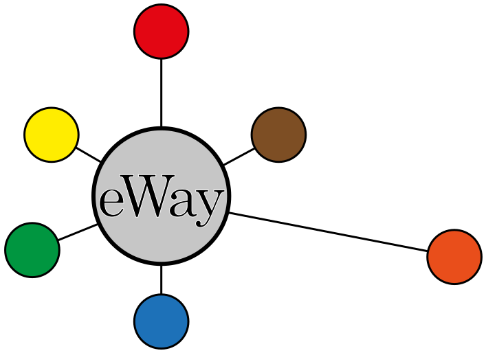

11.2
Hitelesített másolatkészítő modul
modul felhasználói kézikönyv

Dokumentum verziója: 11.2
Ez a dokumentum és a benne közölt minden információ a . szellemi tulajdona, és üzleti titkot képez. A dokumentum egészét vagy részeit kizárólag a . írásbeli hozzájárulásával szabad nyilvánosságra hozni, harmadik fél számára hozzáférhetővé tenni vagy lemásolni.
©1996-2025